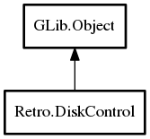

DiskControl
Object Hierarchy:

Description:
public class DiskControl : Object
Handles a virtual disk drive.
It si used by a Core which can swap out multiple disk images at runtime.
If the Core can do this automatically, it should strive to do so. However, there are cases
where the user must manually do so.
To swap a disk image:
- eject the disk image by setting the eject state to true;
- set the image index to the one you want to use.
- insert the disk again by setting the eject state to false.
Content:
Methods:
Inherited Members:
All known members inherited from class GLib.Object
- @new
- newv
- new_valist
- get_type
- get_class
- @ref
- unref
- ref_sink
- weak_ref
- weak_unref
- add_weak_pointer
- remove_weak_pointer
- @get
- @set
- get_property
- set_property
- get_data
- set_data
- set_data_full
- steal_data
- get_qdata
- set_qdata
- set_qdata_full
- steal_qdata
- freeze_notify
- thaw_notify
- dispose
- constructed
- notify_property
- connect
- disconnect
- add_toggle_ref
- remove_toggle_ref
- bind_property
- notify
- ref_count